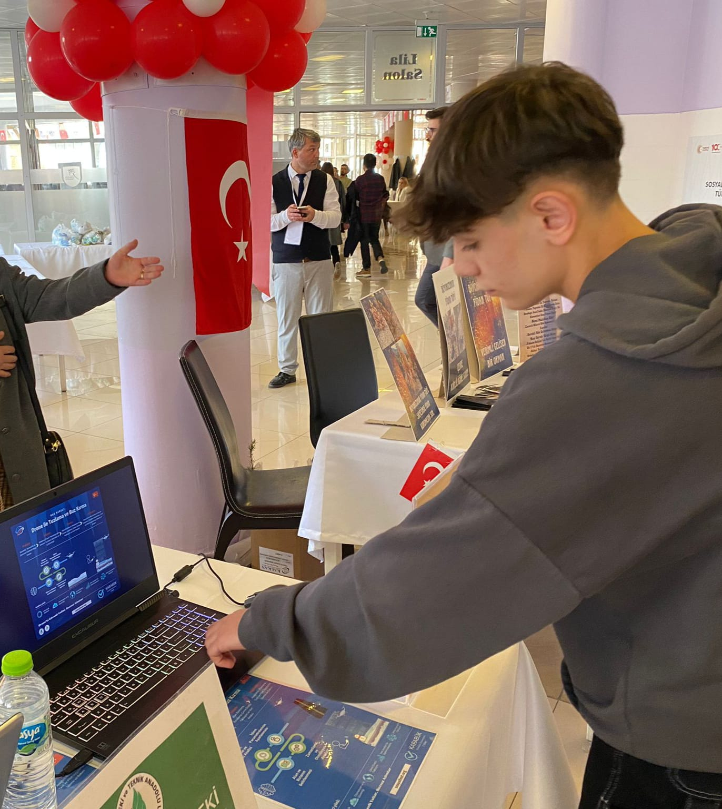

Yazılım Geliştirici | Teknoloji Aşığı | Problem Çözücü
Merhaba, ben Yusuf Ramazan Tarlabaşı. Karabük Mesleki ve Teknik Anadolu Lisesi'nde son sınıf öğrencisiyim. Karabük Gençlik ve Spor Bakanlığı'nda staj yapıyorum. Teknolojiye olan ilgim sayesinde birçok başarılı projeye imza attım. Gelecekte yazılım ve teknoloji alanında uzmanlaşmayı hedefliyorum.
Projelerim veya çalışmalarım hakkında bilgi almak isterseniz, aşağıdaki formu doldurabilirsiniz. Size en kısa sürede dönüş yapacağım.